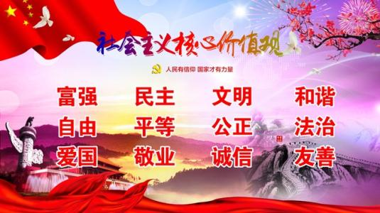
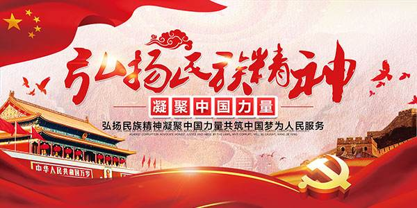

习近平在讲话中强调，祖国必须统一，也必然统一。这是70载两岸关系发展历程的历史定论，也是新时代中华民族伟大复兴的必然要求。两岸中国人、海内外中华儿女理应共担民族大义、顺应历史大势，共同推动两岸关系和平发展、推进祖国和平统一进程。
实现中华民族伟大复兴的中国梦，必须弘扬中国精神，这就是以爱国主义为核心的民族精神和以改革创新为核心的时代精神。中国精神贯穿于中华民族五千年历史、积蕴于近现代中华民族复兴历程，特别是在中国的快速崛起中迸发出来的具有很强的民族集聚、动员与感召效应的精神及其气象，是中国文化软实力的重要显示。
“中国精神”是以马克思主义、毛泽东思想、邓小平理论、“三个代表”重要思想、科学发展观、习近平新时代中国特色社会主义思想为指导，是社会主义核心价值体系的精髓，以社会主义核心价值观为核心内涵，体现了社会主义荣辱观。习近平总书记在第十二届全国人民代表大会第一次会议上指出，中国精神是凝心聚力的兴国之魂、强国之魂。爱国主义始终是把中华民族坚强团结在一起的精神力量，改革创新始终是鞭策我们在改革开放中与时俱进的精神力量。2015年1月19日，从中央政府门户网站了解到，教育部发布的《中等职业学校德育大纲（2014年修订）》把中国精神教育纳入其中。要求加强以爱国主义为核心的民族精神教育，加强以改革创新为核心的时代精神教育，加强中华优秀传统文化教育以及中共党史与国情教育。
民族精神
民族精神是指一个民族在长期共同生活和社会实践中形成的，为本民族大多数成员所认同的价值取向、思维方式、道德规范、精神气质的总和。一个缺乏自己民族精神的民族，不可能自立于世界民族之林。在五千多年的发展中，中华民族形成了以爱国主义为核心的团结统一、爱好和平、勤劳勇敢、自强不息的伟大民族精神。爱国主义是我们民族精神的核心。是中华民族终极归属感与荣誉感，使中国人为了祖国的腾飞，为中华民族的复兴基本内容，是我们每一个人中国人必须传承的。我们只有具备了最基本的“中国精神”，才能具备更高更可贵的“中国精神”，才能完成社会主义的历史使命。敢于斗争、敢于坚持的革命精神，“中国精神”是爱国主义的核心，是树立和弘扬的中心任务。“中国精神”是中华民族坚挺的脊梁，是坚强不屈的中国魂，“中国精神”就是中国魂，需要弘扬那种让中国人自强、自信的国民精神和民族精神。民族精神是一一代又一代前赴后继，民族精神的弘扬和培育有十分重要的现实意义。
民族精神是动态的，是与时俱进的，能继承过去又能超越传统。中华民族精神具有很强的包容性，它发挥海纳百川的气度，与时俱进，广泛吸取外来优秀文明成果，使我们的中华文明变得更加博大、宽容。中国精神是中华民族的灵魂，也是中华民族团结一心、不断进步、走向繁荣的精神支柱和智慧源泉。胡锦涛同志在党的十七大报告中指出：“弘扬中华文化，建设中华民族共有精神家园。中华文化是中华民族生生不息、团结奋进的不竭动力。”“中国精神”是孝、悌、忠、信、礼、义、廉、耻八种德行与“八荣八耻”的社会主义荣辱观自然融合在一起，结合孝道，结合我们中华民族的传统，就是做到八荣八耻；孝道是德行的根本，八荣八耻只有从思想道德入手，才可以落到实处。我们要把孝心献给父母，把忠心献给祖国，把爱心献给人民，把信心留给自己！“中国精神”是共同的语言，共同的觉悟，共同的理想，源自让世界更和谐、更美好，是真正的中国人所应具有的精神。就是“天下兴亡，匹夫有责”的一种承担，是一个炎黄子孙对国家民族乃至全人类的责任和使命！“中国道路”、“中国模式”，是中国经济蓬勃发展的动力，“中国精神”是高瞻远瞩、坚持不懈的历史主动性，是众志成城、共克时艰的强大凝聚力。是迎难而上、自强不息的英雄气概。是把握未来、锐意进取的坚定意志。是豁达开放、担当责任的宽广胸襟。“中国精神”是中华民族的精神财富，也属于全人类的精神宝库，也具有深远意义。
弘扬“中国精神”是兼容的包蓄的，宽容的和谐的。中国共产党及其党员干部始终与人民群众同呼吸共命运，是弘扬和发展”中国精神”所特有的时代内涵。弘扬发展“中国精神”需要我们学习和继续发扬党的传统，社会和谐稳定、社会团结、风气纯正、人心安定和加快走上共同富裕道路。建设有中国特色的社会主义国家需要精神，和谐社会呼唤精神；中国特色社会主义建设需要精神，社会的发展和进步需要精神，每一个中国人民都需要精神。这就是无私奉献的精神、无怨无悔的“中国精神”，为他人、社会、进行全心全意的奉献，是锻炼个人意志品质、提升精神境界、不断进步的成长过程，是无私的奉献互助精神。奉献、友爱、互助、无私的“中国精神”。实现国家富强、民族振兴、社会和谐、人民幸福的新的伟大征程。保持一贯坚定党的信念，不忘初心、继续前进，根据党和国家历史方位和中心任务的变化与时俱进，不断提高领导水平和执政水平、提高拒腐防变和抵御风险能力，这就是高瞻远瞩、坚持不懈的历史主动性，它是主导中国前进的精神力量，是“中国精神”的核心。
“中国精神”是勇敢、执著、奉献，传统文化之精华，重申仁爱、谦恭、自强、自省、和谐等观念，是中华民族传统的勤劳、善良、热爱、无私奉献精神的象征，是中华民族顶天立地、吃苦耐劳、任劳任怨、自觉自信、自强不息、厚德载物精神的载体。是中华民族伟大复兴所必须的自信、自觉、自强、自豪的民族性格，继承、追求、弘扬、创造的一种精神，是我们所需要的一个精神家园。“中国精神”博大精深，它可以涵盖中华民族的智慧、勤劳、勇敢、爱国主义、热爱和平、不屈不挠、自强不息以及自由、平等、博爱；是中华民族现代的勇敢、坚强、正义、敢于担当和热爱祖国、热爱人民的民族精神。是中国当代改革开放的一马当先、敢闯、敢试、敢为人先、任劳任怨、埋头苦干、拼搏进取、开拓创新、无私奉献的中华民族的奋斗精神。 为祖国奉献、为人民服务，热爱祖国、热爱人民，是“中国精神”的本质；任劳任怨、勤恳实干、勇敢自信、刻苦认真是“中国精神”的特征，爱憎分明、自觉自愿、埋头苦干、无私奉献是“中国精神”的关键。就是全心全意为人民服务、鞠躬尽瘁死而后已，就是无私付出不求回报，就是任何时候都知道自己责任、知道自己追求、敢于民族担当的自觉自愿的最伟大精神。中华民族总能焕发出迎难而上、自强不息的英雄气概,它是中国跨越艰难险阻的精神力量，是“中国精神”的精髓。
在革命战争年代诞生的“红色精神”的引领和影响下，才有了新中国成立60多年来的铁人精神、航天精神、特区精神等“中国精神”的一脉相承、相互辉映。我们在学习实践活动中提出“弘扬延安精神、推动科学发展、建设美好祖国，体现了新的历史条件下继承和发扬延安精神的新要求。”中国共产党人以表率行动，生动诠释了“中国精神”的真谛，谱写了一曲曲“中国精神”的动人乐章，铸就了一座座“中国精神”的不巧丰碑。改革开放为“中国精神”注入时代元素，是一个开放、自信的民族。一个前进的时代，总有一种奋发向上的精神；一个发展的民族，总有一种积极进取的意志。
 内涵“中国精神”是社会主义核心价值体系的精髓，是民族精神与时代精神的统一。“中国精神”是中华民族的灵魂，博大精深，内涵深刻，意义深远。
时代精神时代精神是时代发展的产物，是人类文明在每一个时代的精神体现。随着改革开放和中国特色社会主义事业不断发展，改革创新成为当代中国的最强音。以爱国主义为核心的民族精神和以改革创新为核心的时代精神交相辉映，为伟大的“中国精神”注入了崭新的时代元素。改革开放改变了中国人的精神生活，引发并实现了“中国精神”的新转变，将“中国精神”的发展推进到新的阶段。中国智慧、中国气概、中国现象、中国发展中国模式、中国特色社会主义价值观，《文化自觉文化自信文化自强》的中国文化内涵，支撑“中国精神”是文化，是一种先进的中国文化。是一种要让民族挺起脊梁的价值追求与觉醒。“中国共产党是一个有着高度文化自觉的政党”，“自觉”就是共产党立党为公的这个大文化背景下的“自觉”，“自觉”就是一种内在的精神力量。“中国精神”的培育在于文化的自觉与自信；”中国精神”的成长在于中国文化的自强和国家的和平崛起。中国文化内涵，寻的是根，铸的是魂，聚的是心。中国人善良、勇敢、团结、聪明、仁爱、坚忍不拔，中国人用坚韧、勇敢、团结、智慧、大爱向世界展示了令人震撼令人侧目的“中国精神”，中国脊梁！
“中国精神”包含了中国传统文化的精华，是中国传统文化长期发展的思想基础。文化的基本精神是文化发展过程中的精髓的内在动力，是指导民族文化不断前进的基本思想。广泛流传，推动中国文化传统与民族精神发展的作用。中国传统文化的基本精神精神“尊祖宗、重人伦、崇道德、尚礼仪。”中国传统文化还具有发展的观点、自强不息和好学不倦的精神。中国传统文化的人文精神，给我们民族和国家增添了光辉，“中国精神”就是以爱国主义为核心，团结统一、爱好和平、勤劳勇敢、自强不息的伟大民族精神。“中国精神”是我们心中永远的灯塔，它将照亮我们为实现中国梦而努力奋斗。
丰富和发展中国共产党带领广大人民进行革命和建设的奋斗历程中，培育形成了一系列彰显和反映民族精神、体现时代要求、凝聚各方力量的“精神”，大大丰富和发展了中国精神。
五四运动精神是“爱国、进步、民主、科学”的伟大精神。核心是伟大的爱国主义。
井冈山精神是指以毛泽东、朱德为代表的中国共产党人在创建井冈山革命根据地、开辟井冈山革命道路过程中所培育和发扬的革命精神。它是具有原创意义的民族精神，是中国共产党人宝贵的精神财富，是中国共产党优良革命精神传统的源头。实事求是，敢闯新路是它的精髓；坚定信念、敢闯新路是它的灵魂；依靠群众、勇于胜利是它的本质；艰苦奋斗、百折不挠是它的根本。在建设中国特色社会主义的新时期，井冈山精神仍具时代价值。坚定的革命信念,自力更生,英勇奋战，百折不挠,艰苦奋斗。其中坚定的革命信念是这一精神的主题，体现了井冈山精神的最显著特征。江总书记将井冈山精神高度概括为24个字：坚定信念，艰苦奋斗，实事求是，敢闯新路，依靠群众，勇于胜利。
长征精神就是把全国人民和中华民族的根本利益看得高于一切，坚定革命的理想和信念，坚信正义事业必然胜利的精神；就是为了救国救民，不怕任何艰难险阻，不惜付出一切牺牲的精神；就是坚持独立自主、实事求是，一切从实际出发的精神；就是顾全大局、严守纪律、紧密团结的精神；就是紧紧依靠人民群众，同人民群众生死相依、患难与共、艰苦奋斗的精神。 长征精神就是乐于吃苦，不惧艰难的革命乐观主义；勇于战斗，无坚不摧的革命英雄主义；重于求实,独立自主的创新胆略；善于团结，顾全大局的集体主义。其主题是“一不怕苦,二不怕死”，其最显著的特点就是革命英雄主义精神。长征精神，是中国共产党人及其领导的人民军队革命风范的生动反映，是中华民族自强不息的民族品格的集中展示，是以爱国主义为核心的民族精神的最高体现。
......
传承心得在中华文化的历史长河中，无数文化先贤以此为价值追求，传承着中华民族的精魂，赓续着中华文化的基因。
“文艺是铸造灵魂的工程，文艺工作者是灵魂的工程师”，“广大文艺工作者要高扬社会主义核心价值观的旗帜，把社会主义核心价值观生动活泼、活灵活现地体现在文艺创作之中”。习近平总书记在文艺工作座谈会上，对广大文艺工作者提出了希望，对文艺作品以中国精神铸就民族之魂寄予深情期待，为繁荣发展社会主义文艺指明了努力方向，引起了广大文艺工作者的热烈反响和广泛共鸣。
实现中国梦，必须要有中国精神，有一以贯之的民族之魂。应当看到，改革开放以来，中国经济发展很快、人民生活水平提高也很快，同时在思想精神层面也出现一些问题。比较突出的就是一些人观念没有善恶，行为没有底线，不讲对错，不问是非，不知美丑，不辨香臭。说到底，就是价值观缺失，以致精神上变得“失魂落魄”。越是这样的时刻，越需要发挥文艺引领时代风尚、铸就民族魂魄的重要作用，以更多的精品力作诠释弘扬社会主义核心价值观，为我们的民族凝魂聚气，为我们的时代凝心聚力。
“凡作传世之文者，必先有可以传世之心。”韩愈之所以列为唐宋八大家之首，“文起八代之衰，道济天下之溺”，就在于他以文载道。范仲淹的“先天下之忧而忧，后天下之乐而乐”，林则徐的“苟利国家生死以，岂因祸福避趋之”，之所以至今仍释放出深沉的感召力，就在于其中所蕴含的爱国主义情怀历千百年而不变。广大文艺工作者应当焕发强烈的责任感和使命感，当好灵魂的工程师，以鲜明的态度、充沛的激情、生动的笔触，告诉人们什么是应该肯定和赞扬的，什么是必须反对和否定的。
好的文艺作品就应该像蓝天上的阳光、春季里的清风一样，能够启迪思想、温润心灵、陶冶人生，能够扫除颓废萎靡之风。文艺作品要形神兼备，能触动人的灵魂，就必须具有这种春风化雨、润物无声的穿透力量。如何使人们增强做中国人的骨气和底气？如何使人们增强道德判断力和道德荣誉感，向往和追求讲道德、尊道德、守道德的生活？惟有把握和遵循文艺规律，植根中华优秀传统文化土壤，坚持洋为中用、古为今用、开拓创新，我们的文艺作品才能感染人、滋养人、引领人，也才能在世界文化激荡中站稳脚跟，更好发展繁荣、富有生命活力。
几千年来，中华民族为什么能够生生不息、薪火相传？根本就在于中华民族有一脉相承的精神追求、精神特质、精神脉络。在新的时代条件下，以中国精神铸就民族之魂，用光明驱散黑暗，用美善战胜丑恶，中华民族的精神大厦必定坚不可摧、巍然挺立。